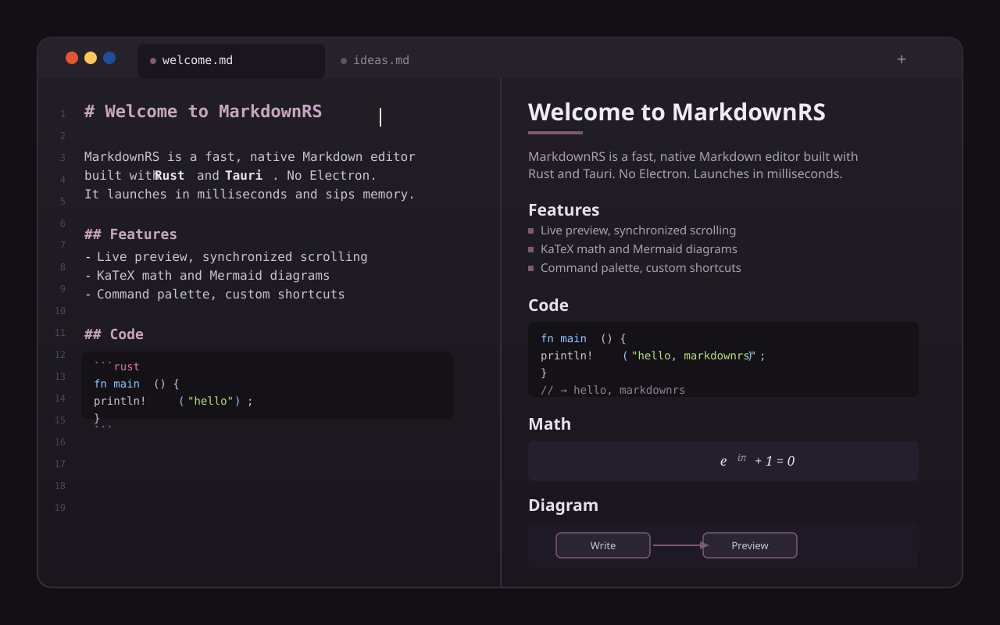
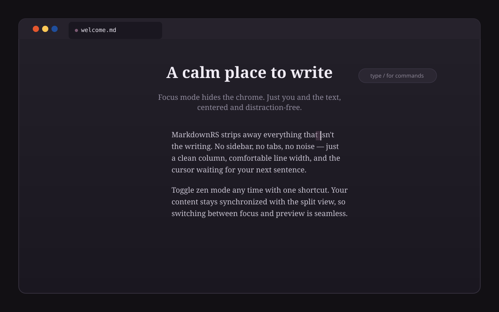
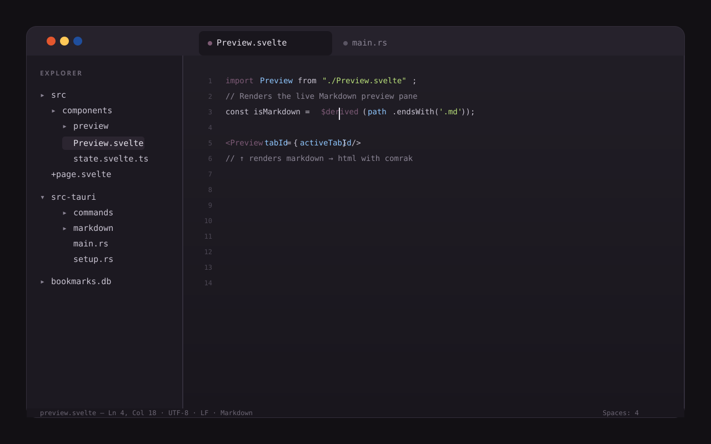
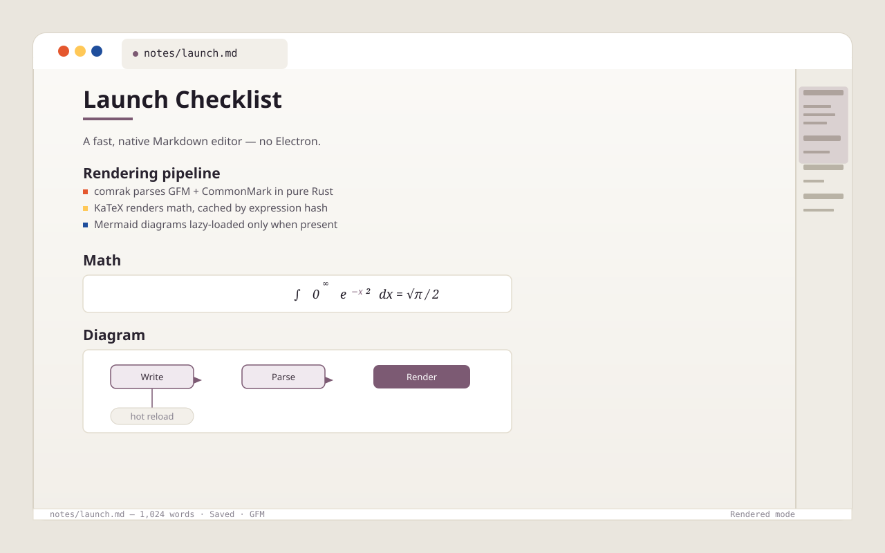

Rust · Tauri · Svelte
A fast, native
Markdown editor
No Electron. No bundled browser engine. Just native code that launches in milliseconds and sips memory while you write.
- Instant
- cold start
- Native
- no Electron
- Offline
- math & diagrams

In action
See it, don't take our word



What's inside
Thoughtfully crafted
-
01
Fast & light
Rust backend for instant startup and smooth editing even on large files.
-
02
Live preview
Split view with smooth, bi-directional synchronized scrolling.
-
03
Rendered mode
Edit in rendered or raw Markdown, switching instantly with CodeMirror 6.
-
04
Auto-save
Session persistence with hot-exit support — never lose your work.
-
05
KaTeX math
Inline and display math, rendered offline and cached by expression.
-
06
Mermaid diagrams
Flowcharts, sequence diagrams and more, lazy-loaded only when present.
-
07
Command palette
Navigate and run anything with Ctrl+Shift+P.
-
08
Custom shortcuts
Remap any command to your own keybinding.
-
09
Multi-tab & bookmarks
Work on many documents, pin them, and tag local files for instant search.
-
10
Smart formatting
Auto-Markdown formatting and rumdl linting for consistent results.
-
11
Full Markdown
GFM and CommonMark — tables, strikethrough, task lists and more.
-
12
Export anywhere
Export documents to PDF, PNG, WEBP or HTML.
Under the hood
Built with serious tools
A native Tauri v2 shell with a Rust backend and a modern Svelte 5 frontend. Markdown parsing, linting and storage all happen in Rust.
- Rust
- Tauri v2
- Svelte 5
- TypeScript
- CodeMirror 6
- comrak
- rumdl
- rusqlite · SQLite
- KaTeX
- Mermaid
- Vite
- Vitest
- Biome
- bun
- Lefthook
Get started
Download MarkdownRS for free
Open source under the MIT license. Grab the latest release for your platform from GitHub, or build it from source.
Linux users: build from the included PKGBUILD, or see the README for other install methods.